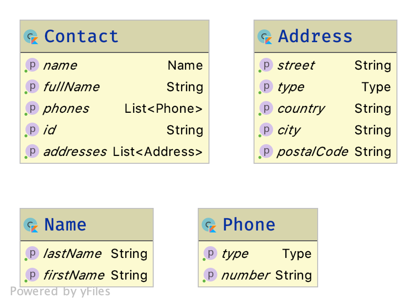

As in the first part of this workshop, we will start by building our common library. This one will be more complete, as we would like it to handle as much logic as possible.
Thus, after creating the project, we will put in it the following parts:
-
The Gradle configuration for every targets (JVM for Android, Native for iOS and JavaScript).
-
The business domain objects
-
The backend API interfaces
-
The MVP pattern, to handle API calls and view updates.
Each of those steps will be defined in the common code, and shared between every targeted platforms!
Project creation
Open IntelliJ IDEA and create a new project:
|
Create a new Gradle project |
|
Fulfill your project’s details:
|
|
Your project is ready! |


|
To avoid any misconfiguration issue you should change the Gradle Wrapper’s properties right now. Go the the newly created file gradle-wrapper.properties
The Gradle wrapper should upgrade itself within the next Gradle action. |
Gradle configuration
Now, we will take some time to explain the gradle configuration, as it is the heavy part of Kotlin multi-platform projects.
Plugins configuration
As we saw earlier, we will need multiple Gradle plugins to achieve our Kotlin multi-platform project.
We already saw that in order to create a Kotlin multi-platform project we have to use the plugin org.jetbrains.kotlin.multiplatform.
Plus, our multi-platform application will need to call a backend API, thus should be able to serialize and de-serialize data.
So, we also have to use Kotlinx.Serialization with the serialization plugin.
Finally, as in the previous exercise, we will need the maven-publish plugin to be able to publish locally our library.
| Note that we won’t cover how to deploy binaries for Native or JavaScript targets. |
Enabling the GRADLE_METADATA feature
Before configuring our plugins, we will add some configuration to be able to depends on Kotlin/Native libraries.
|
If, in your directory hierarchy, you have a file named To do so, either right-click on the file, then click on Refactor > Rename…, or use the keyboard shortcut Shift+F6. Inside the file
Simple quote are from Groovy. |
Go to the settings.gradle.kts file and add the following lines:
enableFeaturePreview("GRADLE_METADATA")Now, go to the build.gradle.kts file and replace the plugins and repositories sections by the following lines:
plugins {
kotlin("multiplatform") version "1.3.50" (1)
kotlin("plugin.serialization") version "1.3.50" (2)
`maven-publish`
}
group = "com.mybusiness"
version = "1.0.0-SNAPSHOT"
repositories {
jcenter()
maven(url = "https://kotlin.bintray.com/kotlinx") (3)
maven(url = "https://dl.bintray.com/jetbrains/kotlin-native-dependencies") (4)
}| 1 | Using the Kotlin/Multiplatform plugin |
| 2 | Using the Kotlinx.Serialization plugin |
| 3 | Needed to resolve Kotlinx dependencies (e.g. Coroutines & Serialization) |
| 4 | Needed to resolve Native dependencies |
Targets configuration
As before, we will target the three environments that are the JVM, iOS and the Web.
Open the build.gradle.kts file and add the following code into the kotlin block:
kotlin {
jvm("android") { (1)
val main by compilations.getting {
kotlinOptions {
jvmTarget = "1.8"
}
}
}
iosX64("ios") { (2)
binaries {
framework { (3)
baseName = "AddressBookCommon" (4)
}
}
}
js { browser() } (5)
}| 1 | Sets the JVM target, named android as we will build an Android afterwards. |
| 2 | Sets the iOS target, named ios to simplify usage of the target |
| 3 | Defines that the output binaries for iOS, must be a framework file… |
| 4 | …with the name AddressBookCommon |
| 5 | Sets the JavaScript target, packaged for a browser usage. |
|
Android is running on a JVM, so it’s just a JVM target. As we could have different JVM targets we can specify it, and as we know for sure that we want to target Android, we will name it in the target declaration android. |
Source sets and dependencies
In this section we will define all the dependencies needed for our Kotlin multi-platform common code.
There are three main dependencies that we will need to develop and use the Kotlin multi-platform library:
-
Ktor client
Like for our backend API, we will use Ktor to empower our HTTP calls on the client side. We will have to use multiple implementations to be able to make some HTTP calls, as:
-
an HTTP engine (OkHttp for Android / NSURLSession for iOS / Fetch for JavaScript)
-
a JSON implementation to be able to serialize and de-serialize the requests/responses payloads.
-
a serialization interface to render JSON into domain objects (using Kotlinx.Serialization)
-
-
Kotlinx.Serialization
To serialize and de-serialize our HTTP calls content, we will use a Kotlin multi-platform library, develop by JetBrains, Kotlinx.Serialization.
-
Kotlinx.Coroutines
As Ktor is an asynchronous framework, and it is based on coroutines, we need to use coroutines context to wrap our HTTP calls.
To avoid code redundancy, we will prepare some shortcuts to declare the dependencies:
kotlin {
// ...
sourceSets {
// Versions
val ktorVersion = "1.2.6"
val coroutinesVersion = "1.3.2"
val serializationVersion = "0.14.0"
// Shortcuts
fun kotlinx(module: String, version: String)
= "org.jetbrains.kotlinx:kotlinx-$module:$version" (1)
fun coroutines(module: String = "")
= kotlinx("coroutines-core$module", coroutinesVersion) (2)
fun serialization(module: String = "")
= kotlinx("serialization-runtime$module", serializationVersion) (3)
fun ktorClient(module: String, version: String
= ktorVersion) = "io.ktor:ktor-client-$module:$version" (4)
}
}| 1 | Builds the dependency name for any kotlinx module with its version |
| 2 | Builds the dependency name for any coroutines-core module |
| 3 | Builds the dependency name for any serialization-runtime module |
| 4 | Builds the dependency name for any ktor-client module |
Common
In this part, we will declare the transverse dependencies for all of our targeted platforms.
Add the following lines to the build.gradle.kts file, in the kotlin > sourceSets block:
kotlin {
// ...
sourceSets {
// ...
val commonMain by getting {
dependencies {
// Kotlin
implementation(kotlin("stdlib-common")) (1)
// Kotlinx
implementation(coroutines("-common")) (2)
implementation(serialization("-common")) (3)
// Ktor client
implementation(ktorClient("core")) (4)
implementation(ktorClient("json")) (5)
implementation(ktorClient("serialization")) (6)
}
}
// ...
}
}| 1 | Kotlin Standard Library for Kotlin multi-platform common projects. |
| 2 | Kotlinx.Coroutines API for Kotlin multi-platform common library. |
| 3 | Kotlinx.Serialization API for Kotlin multi-platform common library. |
| 4 | Common API to use Ktor client on Kotlin multi-platform projects. |
| 5 | Common API to use Json Serializers on Kotlin multi-platform projects. |
| 6 | Common API to use Kotlinx.Serialization with Ktor client on Kotlin multi-platform projects. |
Targeted platforms
Now that we have defined our common dependencies, we need to define the dependencies for each targeted platforms of our Kotlin multi-platform library.
In fact, in our case, it is very simple as each platforms need to import the corresponding implementation of each API dependencies defined in the common module.
Add the following lines to the build.gradle.kts file, in the kotlin > sourceSets block:
kotlin {
// ...
sourceSets {
// ...
val androidMain by getting {
dependencies {
// Kotlin
implementation(kotlin("stdlib")) (1)
// Kotlinx
implementation(coroutines()) (2)
implementation(serialization()) (3)
// Ktor client
implementation(ktorClient("core-jvm")) (4)
implementation(ktorClient("json-jvm")) (5)
implementation(ktorClient("serialization-jvm")) (6)
implementation(ktorClient("okhttp")) (7)
}
}
val iosMain by getting {
dependencies {
// Kotlinx
implementation(coroutines("-native")) (2)
implementation(serialization("-native")) (3)
// Ktor client
implementation(ktorClient("core-native")) (4)
implementation(ktorClient("json-native")) (5)
implementation(ktorClient("serialization-native")) (6)
implementation(ktorClient("ios")) (7)
}
}
val jsMain by getting {
dependencies {
// Kotlin
implementation(kotlin("stdlib-js")) (1)
// Kotlinx
implementation(coroutines("-js")) (2)
implementation(serialization("-js")) (3)
// Ktor client
implementation(ktorClient("core-js")) (4)
implementation(ktorClient("json-js")) (5)
implementation(ktorClient("serialization-js")) (6)
implementation(ktorClient("js")) (7)
}
}
// ...
}
}| 1 | Kotlin Standard Library for the target. |
| 2 | Kotlinx.Coroutines implementation for the target. |
| 3 | Kotlinx.Serialization implementation for the target. |
| 4 | Implementation of Ktor client for the target. |
| 5 | Implementation of Json Serializers for the target. |
| 6 | Implementation of Kotlinx.Serialization with Ktor client for the target. |
| 7 | Specific HTTP client engine for the target, used by Ktor for making HTTP calls. |
|
Remember:
|
The iOS special case
Building libraries for iOS is also a special case in our build script. In fact, to be able to use our common library in Xcode, we need to build a framework file.
To obtain this framework file, add the following block at the end of your Gradle build file:
//...
val packForXcode by tasks.creating(Sync::class) { (1)
val mode = System.getenv("CONFIGURATION") ?: "DEBUG" (2)
val framework = kotlin.targets
.getByName<org.jetbrains.kotlin.gradle.plugin.mpp.KotlinNativeTarget>("ios")
.binaries.getFramework(mode)
inputs.property("mode", mode)
dependsOn(framework.linkTask) (3)
val targetDir = File(buildDir, "xcode-frameworks")
from({ framework.outputDirectory }) (4)
into(targetDir) (5)
}
tasks.getByName("build").dependsOn(packForXcode) (6)| 1 | Creates a new task to make the framework available for Xcode |
| 2 | Selects the right configuration depending on the environment variables set by Xcode build |
| 3 | The new task depends on the fact that the framework has been built |
| 4 | Moves the built framework from the build directory… |
| 5 | …to a new location (could/should be a remote path) |
| 6 | Sets the packForXcode task as part of the build task |
Let’s keep the configuration aside and start coding :)
Defining the domain objects
First thing, we will create the domain objects needed to manage an Address Book. Here is a class diagram of our data model:

Those data classes will be used to send/receive data to/from the backend API. To be able to do so, we should defined them as serializable, using Kotlinx.Serialization.
In commonMain/kotlin, create the package com.mybusiness.model and the Kotlin source file Contact.kt:
|
Then add the following data classes with the right import.
import kotlinx.serialization.Serializable
@Serializable (1)
data class Contact(
val id: String,
val name: Name,
val addresses: List<Address> = mutableListOf(),
val phones: List<Phone> = mutableListOf()
) {
val fullName: String
get() = "${name.lastName} ${name.firstName}"
}
@Serializable (1)
data class Name(
val firstName: String,
val lastName: String
)
@Serializable (1)
data class Address(
val type: Type,
val street: String,
val postalCode: String,
val city: String,
val country: String
) {
enum class Type(val displayedName: String) { HOME("HOME"), WORK("WORK"), OTHER("OTHER") }
}
@Serializable (1)
data class Phone(
val type: Type,
val number: String
) {
enum class Type(val displayedName: String) { HOME("HOME"), WORK("WORK"), MOBILE("MOBILE"), OTHER("OTHER") }
}| 1 | Makes the data classes serializable |
| the collections must be initialized, otherwise you could get some serialization exceptions. |
Reaching the backend API
| In this section you will learn how to use the Ktor client API and how to serialize and de-serialize data with Kotlinx.Serialization. |
Now that our data model is ready, we can implement the interface between the client and the backend API to retrieve data.
Let’s start by creating a new package api and a Kotlin source file ContactApi, still in commonMain/kotlin:

|

Creating the HTTP client
First, to reach our API we have to declare an HTTP client:
const val LOCALHOST = "127.0.0.1" (1)
expect fun apiBaseUrl(): String (2)
class ContactApi {
private val client = HttpClient { (3)
install(JsonFeature) { (4)
serializer = KotlinxSerializer() (5)
}
}
}| 1 | Declares a constant for the API host IP (localhost, as our backend API is running on our local machine) |
| 2 | An expect function will help define specific host IP (e.g. Android Simulator reach the local machine through 10.0.2.2) |
| 3 | Creates the Ktor HTTP client. |
| 4 | Defines that the HTTP client will work with JSON. |
| 5 | Register Kotlinx.Serialization to serialize and de-serialize JSON |
Every import in ContactApi.kt should come from io.ktor.client or kotlinx.serialization`
|
apiBaseUrl() actual implementation
We have defined an expect function in our code,
thus we must define an actual behaviors foreach targeted platforms to be able to compile our project.
For each targets, create a kotlin source file named [ContactApi][platform].kt, and add the right implementation for apiBaseUrl().
actual fun apiBaseUrl(): String = "10.0.2.2" (1)| 1 | On an Android emulator 127.0.0.1 refers to the device itself.
To access your actual machine you need to use 10.0.2.2 |
actual fun apiBaseUrl() = LOCALHOST (1)| 1 | No special case here, your machine can be reached on 127.0.0.1 |
actual fun apiBaseUrl() = LOCALHOST (1)| 1 | No special case here, your machine can be reached on 127.0.0.1 |
Creating the APIs interfaces
Before writing our interfaces to reach each endpoints of the backend API, we will declare an extension function to wrap the API url definition.
class ContactApi {
//...
private fun HttpRequestBuilder.apiUrl(path: String = "/") {
url {
host = apiBaseUrl() (1)
port = 8042 (2)
protocol = URLProtocol.HTTP
encodedPath = "/api/contacts$path" (3)
}
}
}| 1 | Calling the expect function to get the right IP address to reach the backend API |
| 2 | Port of our backend API |
| 3 | Dynamic endpoint path, starting from "/api/contacts" |
GET - Retrieve the contacts from the backend API
If you remember the previous section, we have ran a Ktor server. This server defines 4 endpoints:
-
GET
/api/contacts: Retrieves a list of all the contacts -
GET
/api/contacts/{id}: Retrieves a contact, identified by itsid -
PUT
/api/contacts: Creates a new contact -
POST
/api/contacts/{id}: Updates a contact, identified by itsid
So, we will provide interfaces for each one of those 4 endpoints, thus we will see how to send/receive data classes through an HTTP client.
Get a list of contacts
Let’s start with the simplest case, retrieving a list of Contact. Create a getAllContacts function that returns a List<Contact>.
As the Ktor HttpClient works asynchronously with Kotlin coroutines, we need to define our function as suspendable.
class ContactApi {
//...
suspend fun getAllContacts(): List<Contact> { (1)
return Json.nonstrict.parse( (2)
Contact.serializer().list, (3)
client.get { (4)
apiUrl() (5)
}
)
}
}| 1 | Defines a suspend function that returns a List<Contact>. |
| 2 | Uses the Json.nonstrict.parse function from Kotlinx.Serialization to transfrom Json to Contact data class. |
| 3 | Register the serializer generated on Contact by the kotlinx.serialization plugin. |
| 4 | Calls the backend API… |
| 5 | …on the path /api/contacts/ |
Get a specific contact by its id
Getting the list of all the contacts available on the backend just gives us the id, firstname and lastname of the contacts.
So, we should be able to get the detailed information for a contact giving its id.
class ContactApi {
//...
suspend fun getContactById(contactId: String): Contact { (1)
return Json.nonstrict.parse( (2)
Contact.serializer(), (3)
client.get { (4)
apiUrl("/$contactId") (5)
}
)
}
}| 1 | Defines a suspend function that wait for a String as parameter and returns a Contact. |
| 2 | Uses the Json.nonstrict.parse function from Kotlinx.Serialization to transfrom Json to Contact data class. |
| 3 | Register the serializer generated on Contact by the kotlinx.serialization plugin. |
| 4 | Calls the backend API… |
| 5 | …on the path /api/contacts/{id}, by passing the contactId received by the current function. |
PUT - Create a contact on the backend API
Now that we can retrieve data from the backend API, we should be able to create some contacts.
The backend API as an endpoint for that. We have to call the path /api/contacts/ on the HTTP verb PUT,
with a body containing a Contact transformed into JSON.
Here is how to do it:
class ContactApi {
//...
suspend fun putContact(contact: Contact): String { (1)
return Json.nonstrict.parse( (2)
(StringSerializer to StringSerializer).map, (3)
client.put { (4)
apiUrl() (5)
method = HttpMethod.Put (6)
body = TextContent(Json.stringify(Contact.serializer(), contact), (7)
contentType = ContentType.Application.Json)
}
).values.first()
}
}| 1 | Defines a suspend function that wait for a Contact as parameter and returns a String. |
| 2 | Uses the Json.nonstrict.parse function from Kotlinx.Serialization to transfrom Json to a Map<String, String>. |
| 3 | Register an existing serializer from Kotlinx.Serialization to get a Map<String, String>. |
| 4 | Calls the backend API… |
| 5 | … on the path /api/contacts/… |
| 6 | … with the HTTP verb PUT. |
| 7 | Sets the contact in the body of the HTTP Request, using the serializer generated on Contact by the kotlinx.serialization plugin. |
POST - Update a contact on the backend API
Finally, we have to be able to update an existing contact on the backend. Of course, their is an endpoint for that too.
We can update a contact by calling the bakend API on /api/contacts/{id},
where id is a dynamic parameter that depends on the contact that we want to update.
Plus, we must pass the new data of the Contact to update, in a JSON shape.
Here is how to do it:
class ContactApi {
//...
suspend fun postContact(contact: Contact): Boolean { (1)
val response = client.call { (2)
apiUrl("/${contact.id}") (3)
method = HttpMethod.Post (4)
body = TextContent(Json.stringify(Contact.serializer(), contact), (5)
contentType = ContentType.Application.Json)
}.response (6)
return response.status == HttpStatusCode.OK
}
}| 1 | Defines a suspend function that wait for a Contact as parameter and returns a String. |
| 2 | Declares a HTTP client call |
| 3 | Sets the URL for the client call to /api/contacts/{id}, by passing the Contact::id, from the Contact received by the current function. |
| 4 | Sets the HTTP verb to be used as POST. |
| 5 | Sets the contact in the body of the HTTP Request, using the serializer generated on Contact by the kotlinx.serialization plugin. |
| 6 | Trigger the HTTP request and wait for the response. |